The slide of the lecture is on the left, the same figure or table on the right, computed in the browser from the same data. The ▶ button moves the parameter step by step; the “Worked example” boxes redo the calculation with the numbers of the chapter.
Why multivariate volatility · The multivariate GARCH framework · VEC and BEKK models · Constant and dynamic conditional correlations · DCC for the S&P 500 and the DAX · Five markets: S&P 500, DAX, BET, EUR/RON, Bitcoin · Portfolio VaR 1% with DCC · Dynamic hedge ratios
Why multivariate volatility
Worked example: correlation and portfolio risk
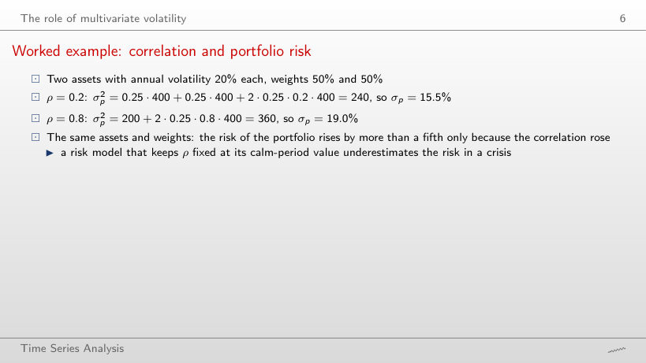
Worked example
Answer
No: +0.63 points from ρ = 0.2 to 0.3 (from 15.49% to 16.12%), but only +0.51 points from 0.9 to 1 (from 19.49% to 20%). σp2 is linear in ρ and σp is its square root, so the curve is concave. With ρ = −0.2 the volatility is 12.6%.
Portfolio volatility against the correlation
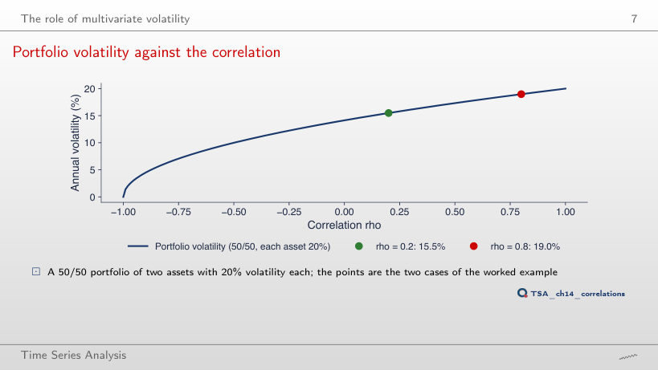
Answer
It rises: 19.02% at 60% and 19.64% at 90%, against 18.97% at 50/50. With equal volatilities the 50/50 portfolio has the lowest risk whatever ρ. With the second asset at 40% and ρ = −1, σp = |0.5 · 20 − 0.5 · 40| = 10%: the risk disappears only with w = 2/3.
Correlations change over time
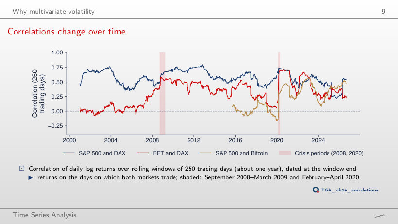
Answer
It rises to 0.30 (November 2025): in a long window the asynchronous days of April 2025 weigh less. With 60 days the correlation goes down to −0.27 (July 2025) and up to 0.86 (January 2012), with a standard deviation of 0.147 against 0.122 at 250 days.
A trap: asynchronous trading
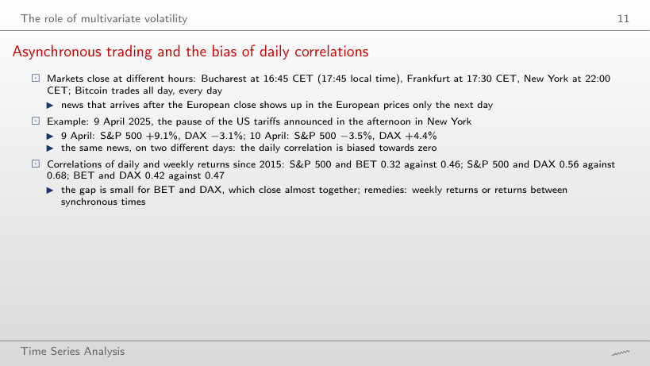
Answer
It rises: 0.32 daily, 0.40 over 2 days and 0.50 over 10 days, above the weekly correlation of 0.46: news that reaches Bucharest a day later falls into the same k-day return. Of the ten pairs, only the S&P 500 and Bitcoin have a weekly correlation below the daily one (0.25 → 0.19): the weekly Bitcoin return also contains the weekend, and the 610 weeks give a noisier estimate than the 2,815 days.
The multivariate GARCH framework
Two conditions on Hₜ
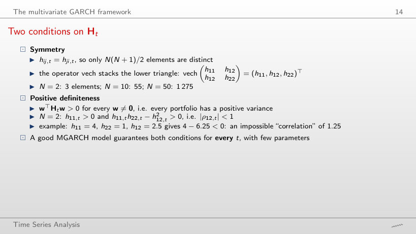
Worked example
Answer
Only for |h12| < 2, i.e. |ρ| < 1. At h12 = ±2 the determinant and one eigenvalue are 0 (a riskless combination); for |h12| > 2 some portfolios have a negative variance, for example −0.416 for h12 = ±2.5. The sign of the covariance does not matter, only its size against √(h11h22).
VEC and BEKK models
Worked example: one step of a diagonal BEKK
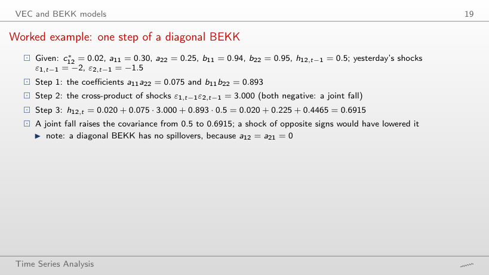
Worked example
Answer
0.2415 = 0.020 + 0.075 · (−3) + 0.4465: shocks of opposite signs lower the covariance. With ε2,t−1 = 0, h12,t = 0.4665, still below 0.5, although the long-run level is 0.625: that level accounts for the cross-product of the shocks being equal to h12 on average, and a day without a joint shock brings only the constant and the persistence.
The curse of dimensionality
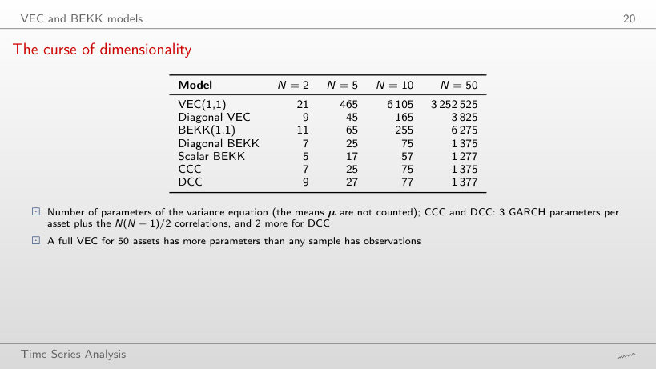
Answer
527: 90 GARCH parameters estimated series by series, 435 sample correlations and only 2 parameters, a and b, found by numerical optimisation. VEC(1,1) has 432,915.
Parameters against the number of assets
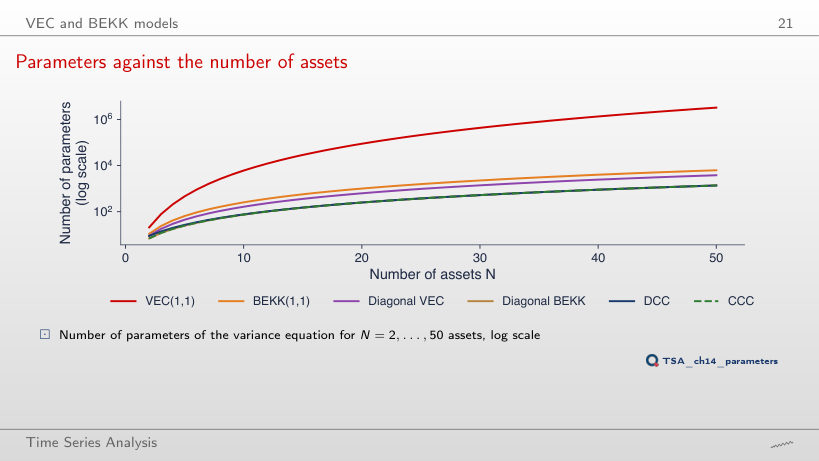
Answer
15.7 times (from 3,252,525 to 51,010,050), like N4: 24 = 16. DCC grows 3.8 times (from 1,377 to 5,252), BEKK(1,1) 4 times (from 6,275 to 25,050).
Constant and dynamic conditional correlations
Worked example: one step of the DCC recursion
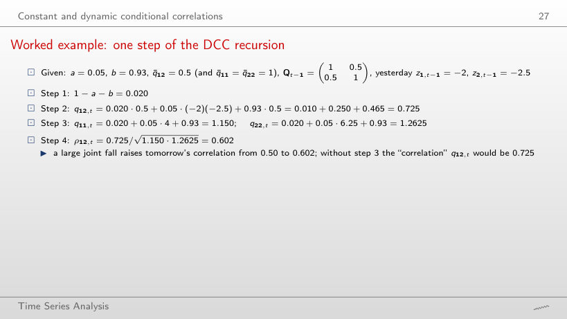
Worked example
Answer
0.187: q12,t = 0.010 − 0.250 + 0.465 = 0.225, while q11,t = 1.150 and q22,t = 1.2625 stay the same. With z2,t−1 = 0 the correlation is 0.454, still below 0.5: a move of one market alone raises a variance in the denominator without adding anything to the covariance.
Reading a and b
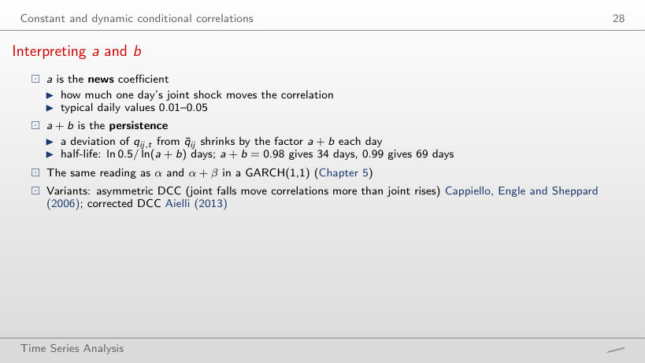
Worked example
Answer
It doubles, from 69 to 138 days: ln(a + b) ≈ −(1 − a − b), so the half-life is about 0.69/(1 − a − b). With a + b = 0.90 it is 6.6 days, and after 20 days 12% of the deviation is left.
DCC for the S&P 500 and the DAX
Step 1: two univariate GARCH models
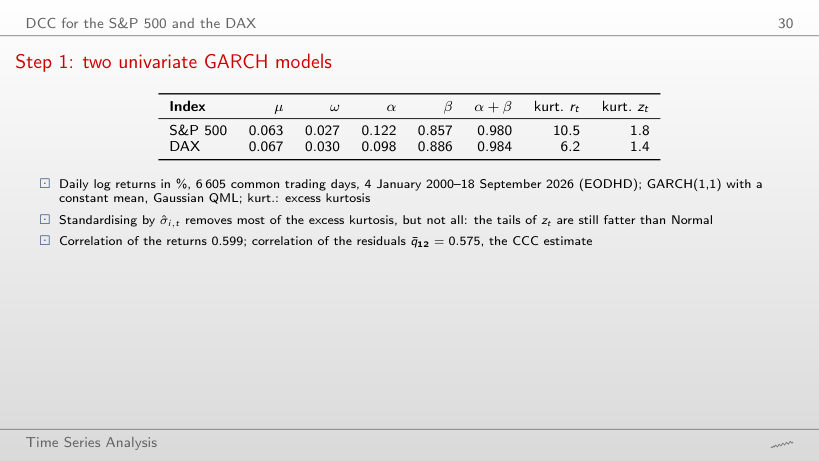
Answer
The S&P 500: 1 − 1.8/10.5 = 83%, against the DAX: 1 − 1.4/6.2 = 78%. Time-varying volatility explains most of the fat tails, but the residuals zt keep an excess kurtosis of 1.4–1.8; this is why a VaR with the Normal quantile will have too many violations.
Step 1: conditional volatilities
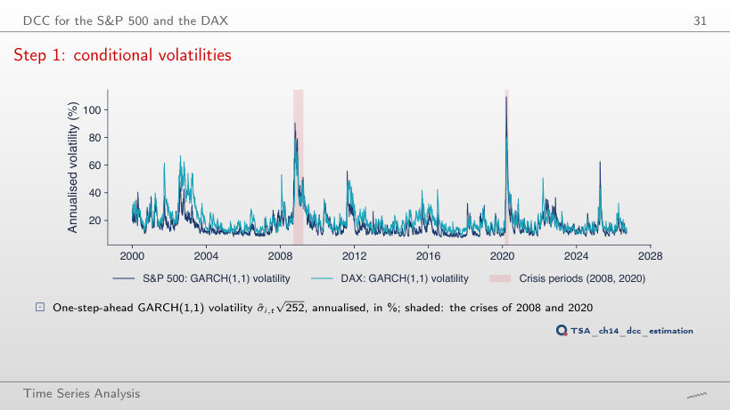
Answer
It rises to 139% (17 March 2020), from 109%: a larger α reacts more to each day’s shock. With the multiplier 0.25 the peak falls to 64% and moves to 25 March 2020. These are extra runs of the filter, not estimates.
Step 2: the estimated DCC
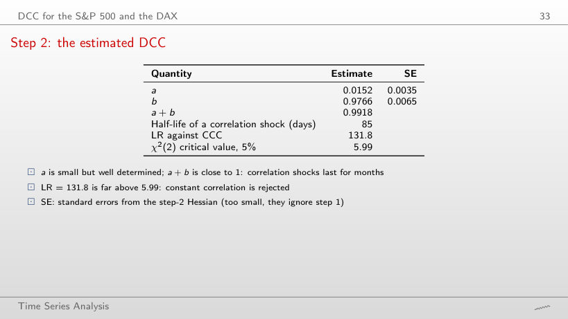
Answer
Yes: the best a on the grid, 0.0074, gives LR = 121.0, far above 5.99. With b = 0.90 the best a is 0.0375 and LR = 102.1: the likelihood has a ridge along which a and b partly replace each other; the maximum, 131.8, is at the estimate (0.0152, 0.9766).
DCC correlation of the S&P 500 and the DAX
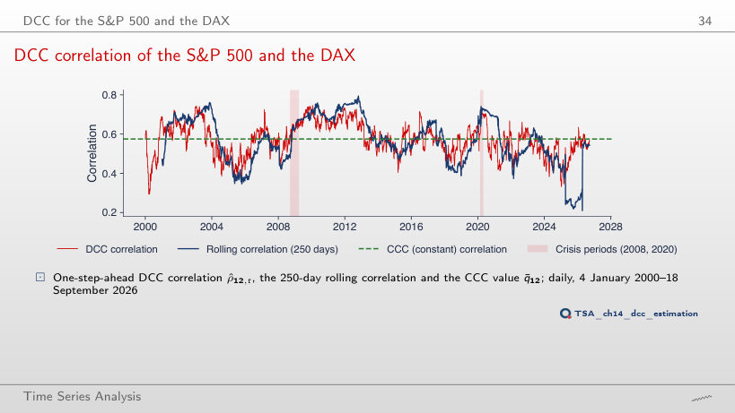
Answer
It rises to 0.120, close to the 250-day rolling correlation (0.122), and the correlation ranges from 0.19 to 0.82. The LR falls to 100.1: the extra variation is noise that the likelihood penalises. With a = 0 the correlation is constant, 0.575, and LR = 0.
Correlations in crises
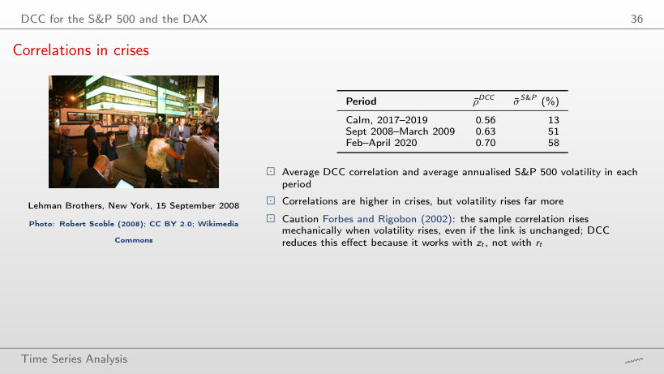
Answer
It widens to 0.18 (0.73 against 0.55); with a = 0 all three means are 0.575. The sample correlation of the returns (choose it in the box) gives 0.74 and 0.52: it rises mechanically with the volatility (Forbes and Rigobon), while DCC works with the standardised residuals.
Inside the crises of 2008 and 2020
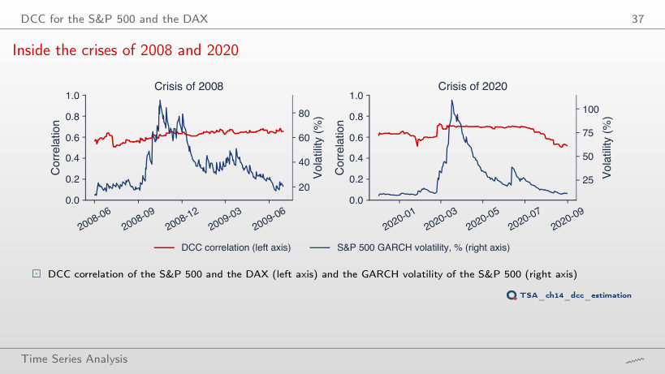
Answer
No: with α doubled the correlation peak, 0.71, is on 12 June 2020, after the volatility peak (139% on 17 March 2020). The larger volatilities of March divide the shocks of those days, so the standardised residuals that drive the DCC recursion are smaller. With the multiplier 0.25 the 2008 volatility peaks only on 2 December 2008 (60%).
Five markets: S&P 500, DAX, BET, EUR/RON, Bitcoin
A five-asset DCC
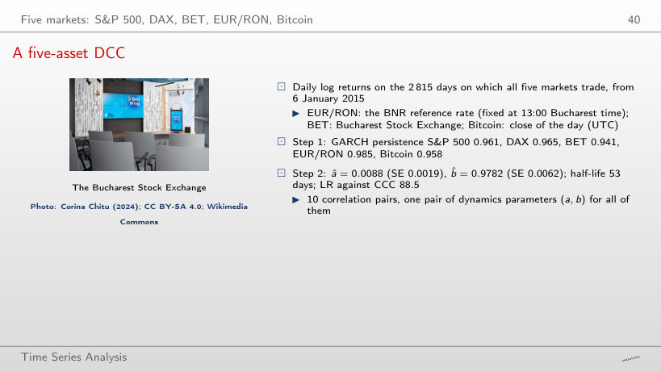
Answer
Bitcoin: 281% on 13 March 2020. The S&P 500 reaches 121% on 17 March 2020, the DAX 84% on 13 March 2020, the BET 98% on 20 December 2018 (the day on which the DCC hedge ratio reaches 1.00), EUR/RON 13% on 21 May 2025.
Dynamic correlations of four pairs
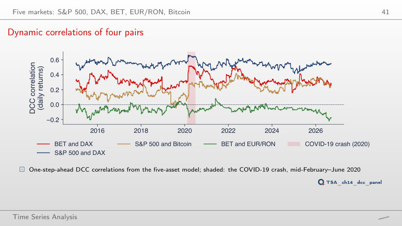
Answer
It widens: from −0.33 to 0.62, with the mean still 0.21. With a = 0 the four correlations become constant, equal to Q̄: 0.55, 0.32, 0.21 and −0.07; this is the CCC model, rejected by LR = 88.5.
Average correlations: calm against crisis
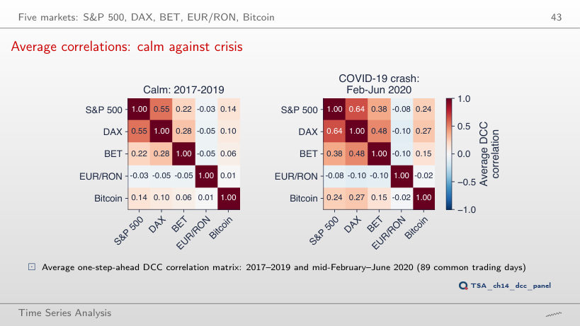
Answer
It rises to 0.23, while the calm-period average falls to 0.10. With a = 0 the two matrices are identical (average 0.135): with constant correlations no rise in the crisis can be seen.
Portfolio VaR 1% with DCC
Worked example: VaR 1% of two assets
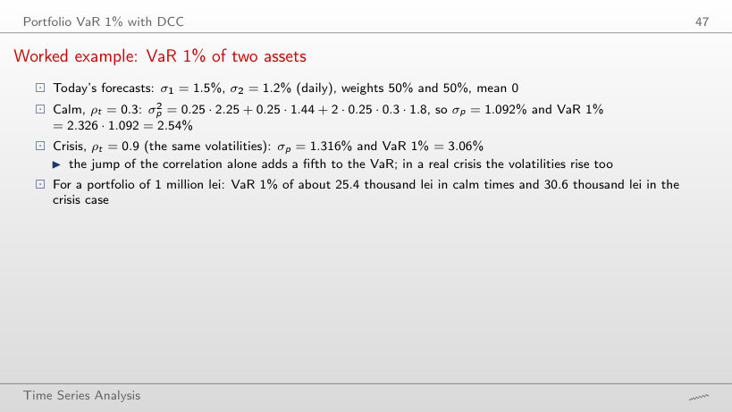
Worked example
Answer
3.14%: σp = 0.5 · 1.5 + 0.5 · 1.2 = 1.35%, the largest possible value with these volatilities. With ρt = −0.5 the VaR 1% is 1.60%, about 16.0 thousand lei for 1 million lei.
VaR 1% of an S&P 500 and DAX portfolio, 2015–2026
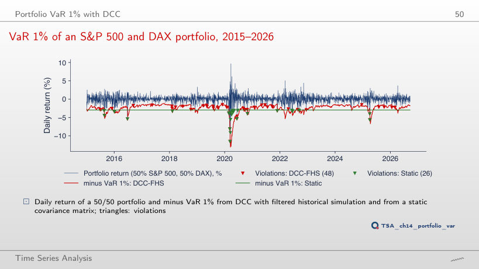
Answer
2.83% (82 violations against 145 expected): too few, LRuc = 33.6, p < 0.001. At 1% the static VaR passed the test (0.90%, p = 0.577): it is too high in calm years, which at 1% offsets the violations of the crises and at 5% does not. DCC with FHS has a rate of 4.60% at 5% (p = 0.314).
Interpreting the backtest
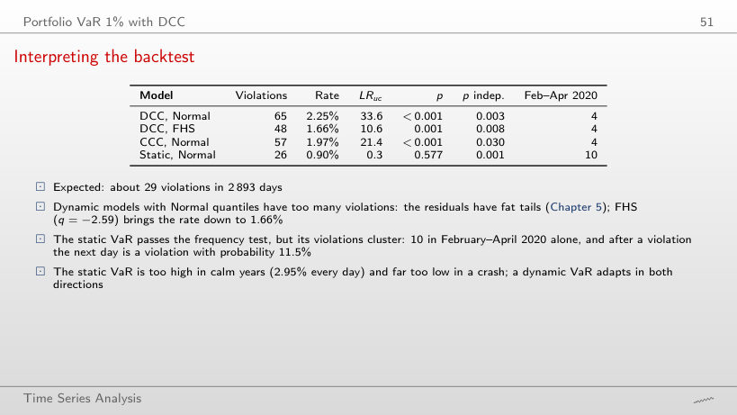
Answer
No: all four have p ≤ 0.0004; the violations come in clusters on the turbulent days. At 2.5% only DCC with FHS passes the Kupiec test (79 violations, a rate of 2.73%, p = 0.433).
Dynamic hedge ratios
Worked example: a hedge ratio
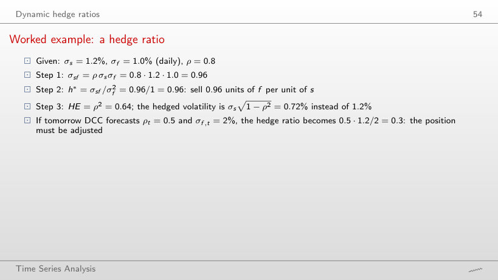
Worked example
Answer
h* = −0.96: buy 0.96 units of f per unit of s; HE = ρ2 = 0.64, as for ρ = 0.8. With ρ = 1 the volatility of the hedged position is 0 (h* = 1.2).
Hedging the BET with the DAX, 2015–2026
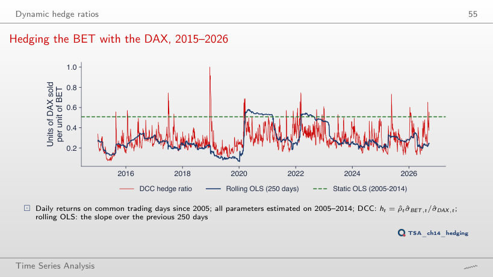
Answer
No: between 17.0% (300 days) and 18.0% (500 days). With a = 0 in the DCC the effectiveness falls to 15.5%, still above the static ratio (13.6%): the correlation is then constant, but the ratio q̄ σBET,t/σDAX,t still follows the GARCH volatilities.
Interpreting the hedge ratios
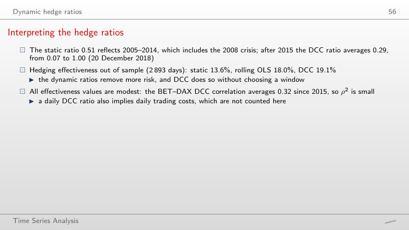
Answer
No: the best result is 18.6%, with 80 days, below 19.1% for DCC; 300 days give only 17.0%. The choice of the window moves the result by more than a percentage point, and DCC needs no such choice.
The daily log returns (in %) of the chapter’s samples, on the common trading days (S&P 500, DAX, BET, EUR/RON, Bitcoin; data/market, EODHD), are not revised and reproduce the numbers of the lecture exactly. The estimates come from the chapter’s code: the GARCH(1,1) models of step 1 (arch package) and the parameters (a, b) of step 2 with their standard errors, for the S&P 500 and the DAX (2000–2026), for the five-asset panel (since 2015), for the 2000–2014 estimation sample of the VaR and for the 2005–2014 sample of the hedge. The browser runs the recursions again: the GARCH variance filter with the given parameters, the DCC recursion, the rolling correlations and slopes, the correlation log-likelihood, the VaR and the Kupiec and Christoffersen tests. Variants that do not appear in the lecture (other windows, other values of a and b, another α of step 1 with the same persistence, other VaR levels, k-day returns, the forecasts without new shocks, the quarterly means) are extra runs of the chapter’s code on the same data; the charts of the “Worked example” boxes, “A trap: asynchronous trading”, “Two conditions on Hₜ”, “The curse of dimensionality”, “Reading a and b”, “Step 1: two univariate GARCH models”, “Step 2: the estimated DCC”, “Correlations in crises”, “A five-asset DCC”, “Interpreting the backtest” and “Interpreting the hedge ratios” are extra charts for slides that give only numbers.